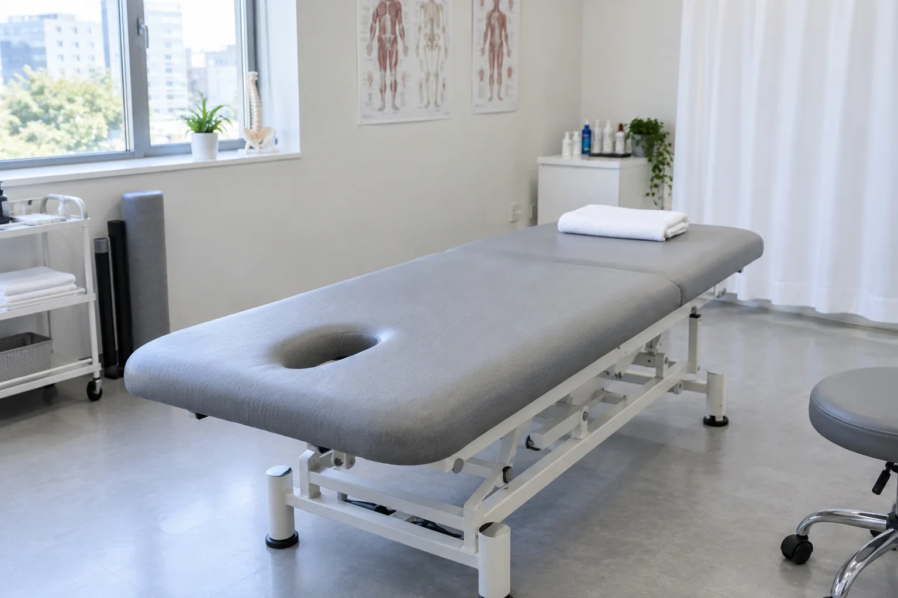

RECOVERY CARE
근육·관절 균형 회복에 기통찬 도수치료
단순한 마사지가 아닌, 근육·관절과 신경의 균형을 바로잡아
통증을 줄이고 신체 기능의 회복을 돕습니다.
도수치료는 숙련된 전문 치료사가 손과 치료 도구를 활용해
통증의 원인이 되는 근육과 관절의 문제를 세심하게 살피고,
뭉치고 짧아진 근육과 근막을 직접 풀어 긴장과 압박을 덜어내며
신체의 균형과 기능, 편안한 움직임의 회복을 돕는 1:1 맞춤 비수술 치료입니다.

POINT 3
기통찬 도수치료의 핵심 포인트
근육·신경의 문제를 함께 치료
단순한 증상 완화에 그치지 않고, 긴장되고 짧아진 근육과 그로 인해 영향을 받는 신경을 함께 살펴
통증의 원인이 되는 부위를 치료합니다.
무너진 신체 균형 및 체형 교정
잘못된 자세와 생활 습관으로 흐트러진 목·어깨·척추·골반의 정렬과 체형을 바로잡아, 통증의 재발을 줄이고 신체 기능의 회복을 돕습니다.
1:1 맞춤 정밀 치료
통증의 정도와 기간, 근육·관절의 상태를 세심하게 평가하여 환자에게 적합한 강도와 방법으로 치료합니다.
WHAT MAKES IT DIFFERENT
기통찬 도수치료의 핵심 포인트
통증의 원인까지 찾아가는 도수치료
원장의 진찰을 통해 통증을 유발하는 근육·관절과 신경의 문제를 찾아 치료의 방향을 세웁니다.
원장과 치료사가 함께하는 체계적인 협진
원장이 설정한 치료 방향을 바탕으로 치료사가 환자의 상태와 반응에 맞춰 치료하고, 치료 경과를 공유하며 필요에 따라 방향을 조정해 나갑니다.
INDICATION
주요 적용 증상
질환별 특성과 치료가 필요한 부위를 안내해드립니다.


YEOUIDO GITONGCHAN
탄력을 잃은 근육에, 다시 편안한 움직임을
근막 이완 · 기능 회복